PROLOGUE — STORYBOARD
Written by Noah Keates • 2.39:1 Anamorphic • Approx. 4 Minutes Visual Development by House Productions
01The WallEXT. HAILEY HILL WALL — DUSK
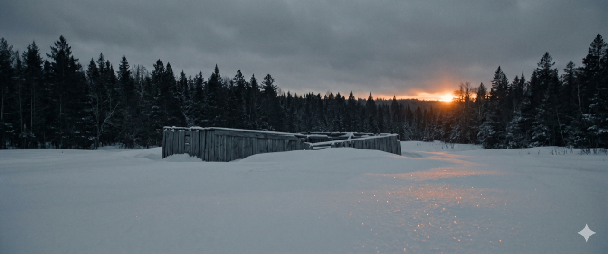
Wide Shot — Crane down
1A
Fade in on hard snow, gray sky bleeding orange. Wooden wall weathered, barely visible under drifts. Beyond: dark pines, wilderness.
Low wind building. Not howling—breathing.
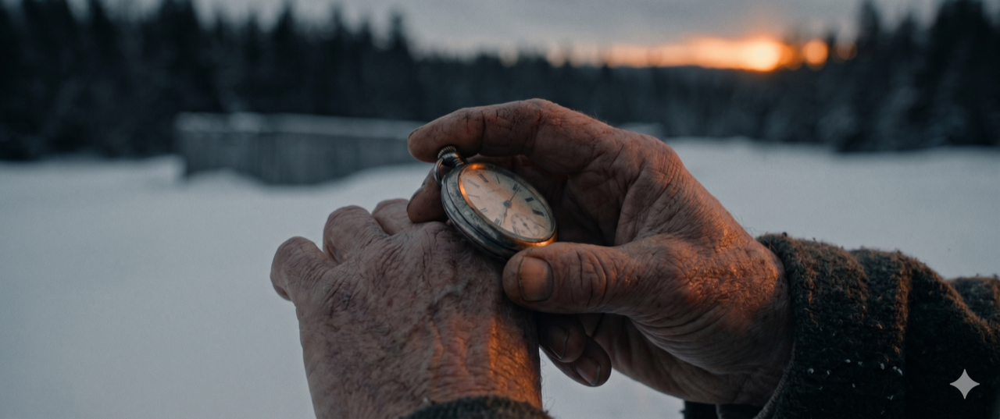
Tracking Shot
1B
Old Man shuffles toward wall. Rolls pocket watch across knuckles. Movement practiced, hypnotic.
Watch: tick... tick... tick...
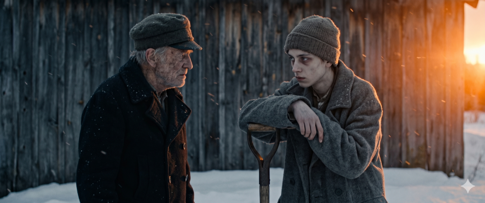
Medium Two-Shot
1C
Boy (Walter, 14-15) waits, shovel planted. Gray eyes, bags underneath. Starved-thin frame in wool coat. Watch rolls one more time. Old Man looks up.
Wind drops. Silence. “You're early.”
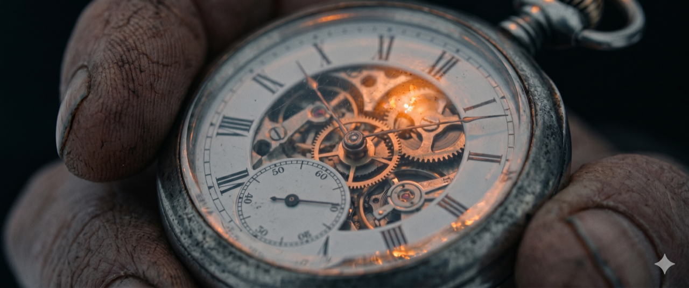
Insert — ECU
1D
Pocket watch in Old Man's hand. Mechanical. Ticking. Reflected orange light from horizon.
“So when you die, who's to say if I was early, late, or just on time.”
Scene Note: Establish the ritual and the geometry of sacrifice. The watch is a timepiece but also a countdown. Every shot should feel like borrowed time.
02The MarchEXT. WOODS PATH — CONTINUOUS
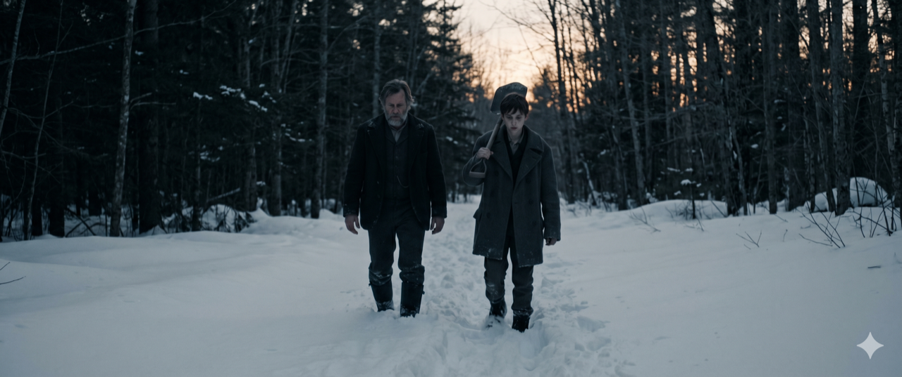
Wide Shot — Tracking
2A
They walk past the wall into trees. Old Man's pat on shoulder—almost knocks boy down. Four boots crushing powder.
Footsteps in snow. Four boots going. Then two.
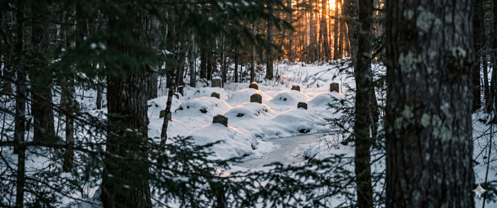
POV / Long Lens
2B
Clearing opens ahead. Sun: hard orange band on horizon. NINE MOUNDS visible through trees—snow-shrouded. Stones poke through: rings of misaligned teeth.
Wind whispers with watch: “It's not early anymore.”
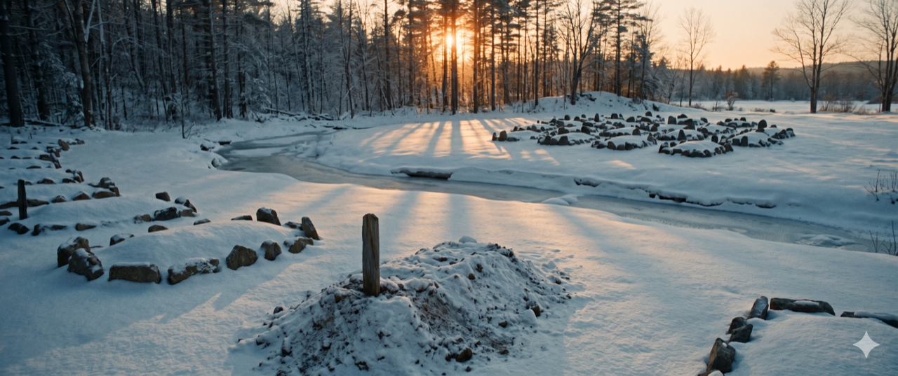
Slow Push-In
2C
Track past mounds. Five across streambed. Four where they stand. Tenth waits, unmade. Each wrapped in snow like burial shroud.
Wind builds. Carries something distant.
03The CoinEXT. CLEARING STREAMBED — MOMENTS LATER
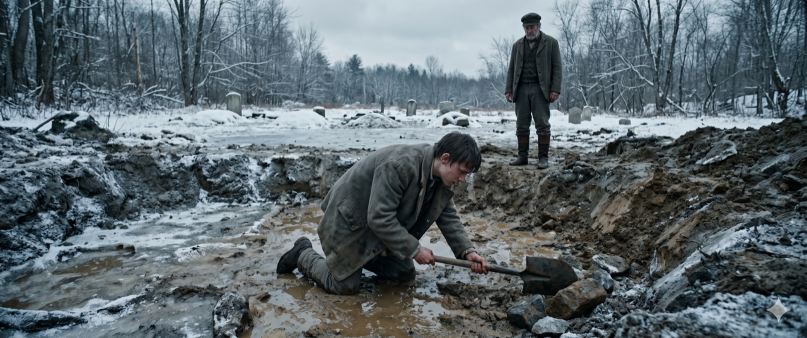
High Angle — Looking down
3A
Boy in streambed, one knee in mud. Hacking at lodged stones with shovel. Sweat on neck despite freeze. Old Man watches from bank.
Shovel strikes stone. Grunts. “The last ones were messy.”
Insert — ECU Coin
3B
From deep coat pocket: THE COIN. Rose bloom on one face. Two antlers on the other. Held up to last orange light.
Coin FLIPPED fast. Flash of copper against sky. Lands soft: ROSE FACE UP. Petals catching sunset shimmer.
Soft thud into powder. Boy's rattly breath. “Flip it for yourself.”
Macro — Below Ice
3D
Boy flips again. SNAPS off thumb before he's decided. Lands in ice: CLINK. Two antlers stare up through frozen water. Distorted.
“It always has to eat.”
Scene Note: The coin is binary fate. Rose = beauty/life. Antlers = beast/death. The speed of the flip is panic. The sound of ice is wrong because the outcome is already decided—it was always going to be antlers.
04The BindingEXT. CLEARING — BACK POST
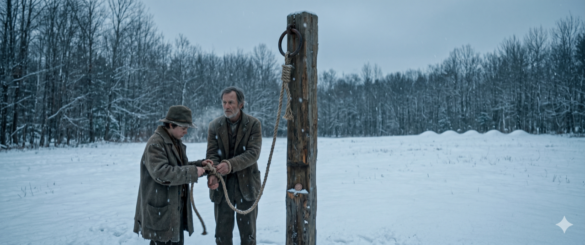
Wide Two-Shot
4A
They walk to back of clearing. Wooden POST with rope dangling. Snow-heavy. Waiting. Boy's hands SHAKE as he ties.
Rope creaks. Wood groans.
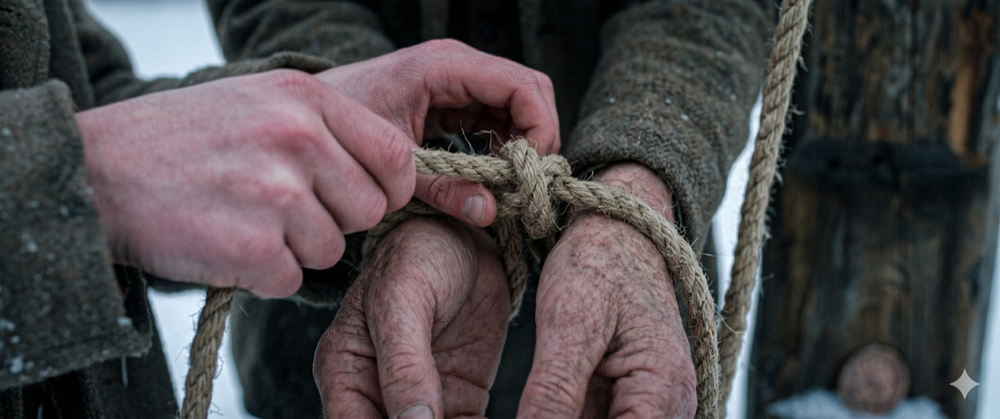
Insert — Hands
4B
Close on boy's hands. First knot SLIPS on old man's wrist. Second holds TIGHTER. Shake reaching his teeth now.
“I don't know the prayer. I'm sorry, I never learned it.”
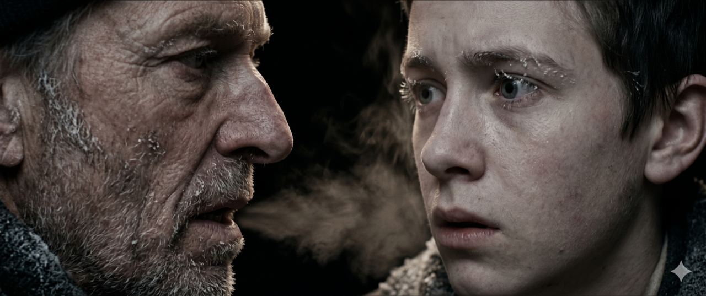
Intimate Two-Shot
4C
Bound man leans in close. Hook nose. Frost melts from tip with his breath. Rank with alcohol, ash, and fear.
“Prayers are for perfect men.” Thinner than a cackle. Almost a sob.
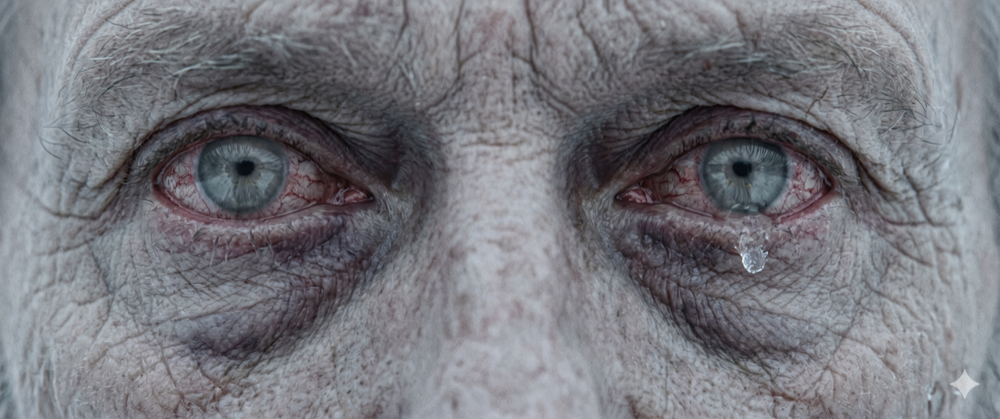
Extreme Close-Up — Eyes
4D
Old Man's eyes: resignation and terror simultaneously. Not cowardice—acceptance. He knew this role was always his.
“Bury me deep. I don't want to come walking back home.”
05The ArrivalEXT. CLEARING — EDGE OF TREES
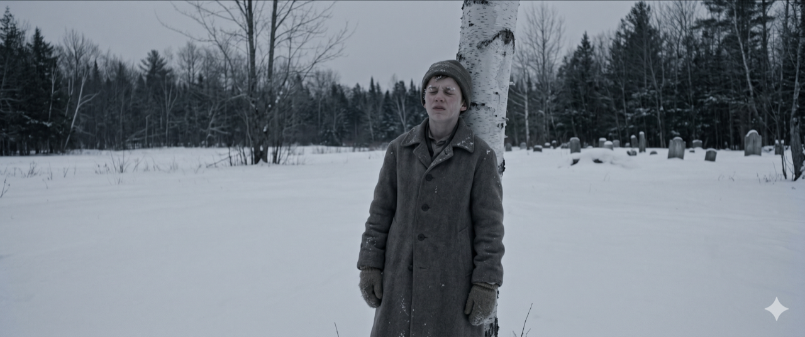
Wide Shot — Isolation
5A
Boy crosses clearing. Small against white. Presses back to tree. Shuts eyes TIGHT. Snow on lashes. Breathing shallow.
Footsteps retreating. Fading. Then silence. Wind dies. Only watch: tick... tick...
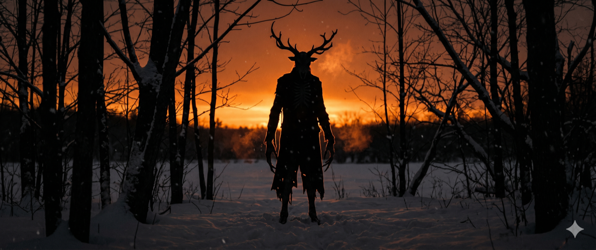
Silhouette / Backlight
5B
CRY from trees. Guttural. Loud. Like dying deer before the knife—but mixed with ecstasy. Absolute ecstasy.
Composite: deer death + opera singer (ecstasy) + slowed wolf + ice crack.
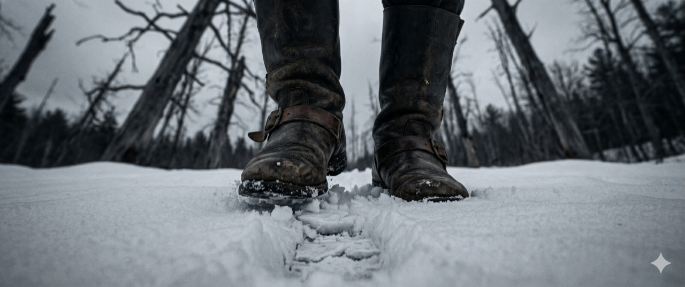
Low Angle — POV
5C
FOOTSTEPS: two of them. Methodical. Far side of clearing. Moving with purpose. Not rushing—inevitable. *tick-STEP-tick-STEP*
Watch and footsteps sync. Rhythm matching heartbeat we feel but don't hear.
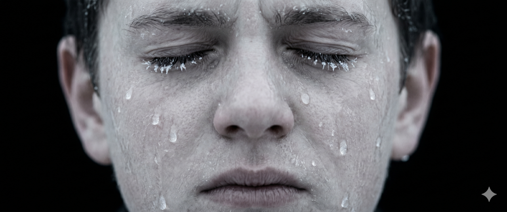
Extreme Close-Up — Face
5D
HOLD on boy's face. Eyes squeezed shut. Tears freezing on cheeks. For a second: both seem to stop. The watch. And whatever walks.
Silence. One beat. Two. Then—
[BLACK FRAME]
FADE TO BLACK
5E
SHRIEKING starts. Not from one throat. From the woods. From the snow. From everywhere. The clearing itself screams.
SHRIEKING OVER BLACK. Building. Relentless. Hold 5+ seconds. CUT TO SILENCE.
Scene Note: The shriek is the release of all built tension. It should feel like it comes from inside the theater, not the screen. Hold on black longer than comfortable. The audience needs to sit in the darkness and wonder what they just agreed to watch.